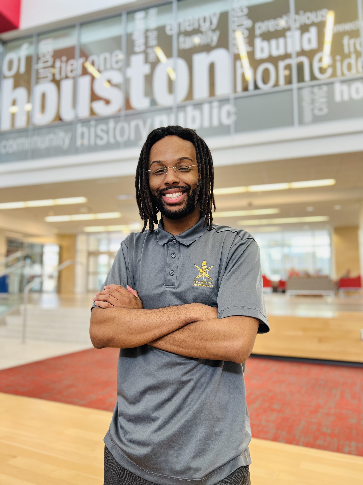
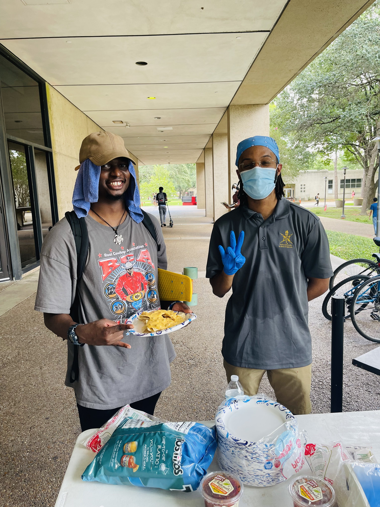
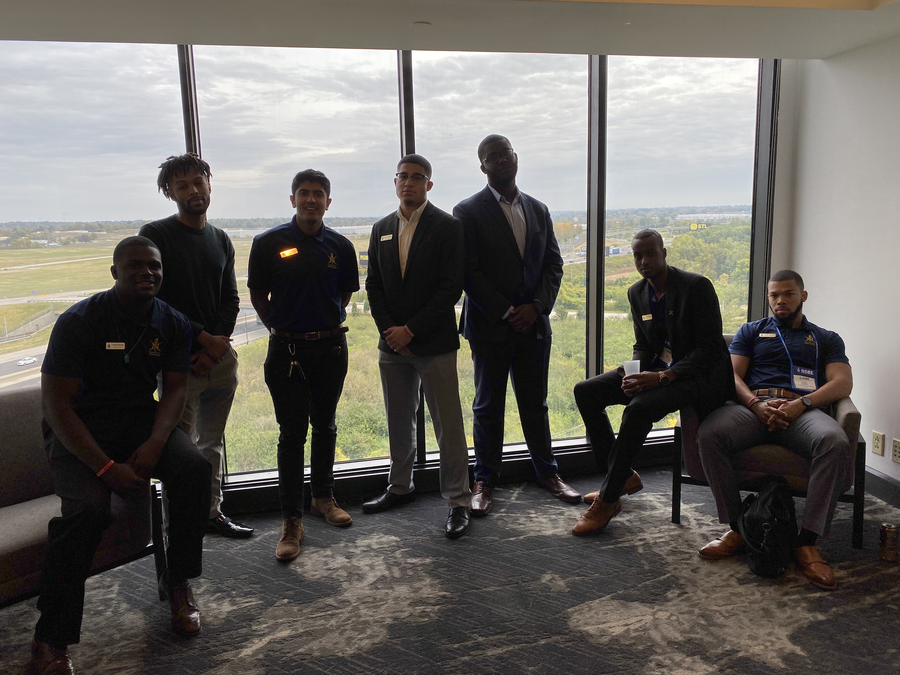
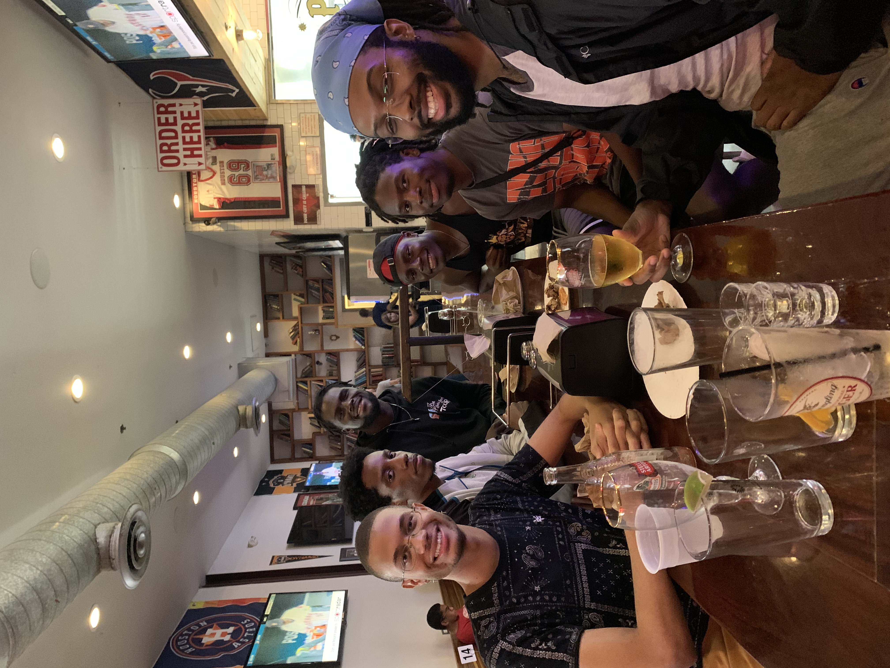

My Time In NSBE
What is NSBE?
The National Society of Black Engineers is an organization founded to help young black engineers succeed at the collegiate level and to eventually lead succesful careers as engineers. With that, NSBE members are tasked with not only fulfilling that, but to also give back to the community with their service, resources, and knowledge.
NSBE MissionEvents from the University of Houston chapter
This is me, Desmond Bush, in my officer uniform as my first year as an officer.
This was the first food sale that I ran, where I served nachos to the many students of UH.
The first major trip I took with my chapter to St. Louis. I learned a lot about NSBE and life after college.
One of my best in-person events. We ate at our local pizza spot, Pinks.
To increase the number of culturally responsible Black Engineers who excel academically, succeed professionally and positively impact the community.
-The NSBE Mission Statement
Thanks for viewing my page
If you have any recommendations or just want to contact me, go ahead and click that button over there!
E-mail Me!